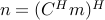
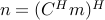
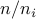
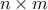

Using Methods on Operators
- Multiplication
- Transposition and conjugation
- Addition and subtraction
- Operator Information
- Dictionaries and arrays
- Block diagonal operators
- Kronecker products
- Subset assignment and reference
- Elementwise operations
- Power, inverse, and backslash operations
- Solving systems of linear equations
- Application to non-linear operators
All Spot operators provide routines for multiplying vectors by itself and its adjoint. The real power of the operator toolbox is the ease with which (see the basic operators) can be combined into more powerful operators, which themselves can be combined into yet more powerful operators. In this section we discuss the type of operations can be applied to all Spot operators. All operations discussed in this section are implemented using underlying meta-operators. Pointers to these operators are given at the end of each section, where relevant. In the cases where the meta-operators provide more extensive possibilities, they are described in more detail below the basic use.
We denote by – arbitrary Spot operators and by  any
matrix. All operator and matrix are assumed to have appropriate
dimensions that can vary line per line. Most operations described in
this section are meaningful only when applied to linear operators; see Application to non-linear operators for more details.
any
matrix. All operator and matrix are assumed to have appropriate
dimensions that can vary line per line. Most operations described in
this section are meaningful only when applied to linear operators; see Application to non-linear operators for more details.
Multiplication
Multiplication by operators is the most elementary operation in Spot. In its simplest form we have operator-vector products such as:
y = A * x; z = B * y; n = m'* C;
This will evaluate the application of on  , and then to
, and then to
 (the third command is evaluated as ). In both cases the result will be an explicit vector of real or
complex numbers. An equivalent approach is to first create a new
operator representing the product , and then apply this
to to immediately get vector :
(the third command is evaluated as ). In both cases the result will be an explicit vector of real or
complex numbers. An equivalent approach is to first create a new
operator representing the product , and then apply this
to to immediately get vector :
C = B * A; % Construct compound operator z = C * x; % Evaluate z = BAx
Although Spot operators are expected to support only
multiplication of vectors, it is possible to write operator-matrix
multiplications. However, it should be kept in mind that this is
implemented as a series of operator-vector multiplications. The second command below is evaluated as  .
.
N = C * M; N = M * C; %
A special case of multiplication is multiplication by scalars. Generally, this will give a new operator scaled by that quantity;
C = 3 * A; % Construct compound operator C = 3A C = A * 3;
One notable exception is when the corresponding dimension of the operator is one. In that case we have a valid matrix-vector product which results in a numeric solution. In other words, matrix-vector products take precedence over scalar multiplication. In such cases it is still possible to scale the operator, either by changing the order (as shown above) or by directly setting the .scalar property of the operator. Two remaining special cases are multiplication by , indicated by the unary plus and minus operations
C = -A; B = +A;
This works regardless of the dimensions of the operator. Note that elementwise multiplication using .* is not supported as this would require the explicit matrix underlying the operator to be known.
In the evaluation and comparison of algorithms it is often useful to know how many multiplications have been performed using a given operator. To facilitate these kind of measurements it is possible to associate a counter variable to each operator.
See opFoG
Transposition and conjugation
As mentioned in the introduction, each Spot operator implements multiplication by itself and its conjugate. Using Matlab’s transpose operator ’ returns a new operator in which these two modes are switched.
B = A'; x = A'* y; x = B * y; % Identical result as previous line
When using transposes within calculations these new operators are
discarded as soon as the multiplication has been done. Since
transposes in Spot are simple book keeping operations, they are
essentially free; no underlying matrices are actually transposed.
The transpose of a complex operator, rather than its conjugate, can be
formed using the .’ operator. This is implemented as the
elementwise conjugate (see conj) of the conjugate, or  :
:
A = C.'; % Transpose of complex operator
Note that in this case a single multiplication of a complex vector by requires two multiplications by due to the implementation of the conj operation. When applied to a real operator, the .’ operation reduces to the standard ’ operation.
Addition and subtraction
The next elementary operation is the addition and subtraction of operators. In its simplest for we add two or more operators;
x = (B + C + D) * y; A = B + C + D; x = A * y; % Equivalent to first statement
When Spot encounters the sum of an operator with a matrix or some class object that implements the multiplication and size operators, it will first wrap that entity to a Spot operator using the opMatrix command. This allows us to write
C = A + M; % Addition of operator and matrix C = M + A; % Addition of matrix and operator
Addition of scalars to an operator is interpreted as an elementwise addition, just like it is done for matrices. In order to make this work we first create a new operator of appropriate size, consisting of only ones (see OpOnes), and premultiply that with the scalar. The following two statements are therefore equivalent
A = B + 3; A = B + 3*opOnes(size(B));
Subtraction is implemented by scalar multiplication combined with addition.
A = B - C; A = B + (-C);
Unfortunately, Spot can only provide a limited amount of simplification of operators. This means that in the following case, no simplification is done;
A = B + 3 - 2; % Not simplified, A = B + 3 - 2; A = B + C - C; % Not simplified
See opSum
Operator information
Before we proceed with more advanced operator manipulations, let us briefly look at some ways of querying operator information. This kind of information is useful when developing algorithms and also enable us to explain how certain operator manipulations work.
The most elementary property of each operator is its size, and it can be queried using the size command. The use of this command is best illustrated using a number of examples based on a operator A:
[m,n] = size(A); % Gives m = 3, n = 6; m = size(A,1); % Gives m = 3; n = size(A,2); % Gives n = 6; o = size(A,3); % Gives o = 1;
Note that the first two dimensions give the number of rows and columns respectively. All higher dimensions have size one by definition. To check if an operator is empty we can use isempty:
if isempty(A)
error('Operator A cannot be empty');
end
An operator is considered empty if either its number of rows or its number of columns is zero; a operator, albeit of limited use, is perfectly valid and can be applied to vectors of corresponding size.
When working interactively from the Matlab command line it is often more convenient to display the operator by typing its name, or using the disp and whos commands. For the following example we assume that operator is the operator representation of a matrix (see opMatrix)
>> A
A =
Spot operator: Matrix(3,6)
rows: 3 complex: no
cols: 6 type: Matrix
>> disp(A)
Spot operator: Matrix(3,6)
>> whos A
Name Size Bytes Class Attributes
A 3x6 305 opMatrix
The first two commands also provide information about the construction of the operator:
B =
Spot operator: Matrix(3,6)' * Matrix(3,6)
rows: 6 complex: no
cols: 6 type: FoG
At times, for example during debugging or when using codes not compatible with Spot, it is desirable to have access to the matrix form underlying an operator. This can be done identically using the double, or full commands:
>> A = opDCT(4);
>> double(A)
ans =
0.5000 0.5000 0.5000 0.5000
0.6533 0.2706 -0.2706 -0.6533
0.5000 -0.5000 -0.5000 0.5000
0.2706 -0.6533 0.6533 -0.2706
This explicit form is obtained though multiplication by the identity matrix. As such, it can be quite an expensive operator. When the number of rows is much smaller than the number of columns it may be faster to use double(A’)’ instead of double(A).
Finally, the command isreal can be used to check if the operator is real or complex.
Dictionaries and arrays
The original motivation for developing Spot was the concatenation of operators to form a dictionary. This can now be achieved simply by writing
A = [B,C,M]; % or A = [B C M];
Note that explicit matrices and classes can be mixed with Spot operators, provided they are all compatible in size. Like in operator addition Spot automatically converts these entities to Spot operators. Vertical concatenation is done likewise by typing
A = [B;C;M]; % or
A = [B
C
M];
With the specification of these two operations, Matlab automatically converts arrays of operators into a vertical concatenation of dictionaries:
A = [B C; C' M]; % or
A = [B C
C' M]; % both represent A = [[B,C];[C',M]];
See opDictionary, opStack
Block diagonal operators
Analogous to matrices of operators it is possible to construct block diagonal operators of operators, using the blkdiag command. It takes a list of operators and matrices to create the desired operator:
D = blkdiag(A,B,C,M);
There is no restriction on the dimension of each operator. This means that the resulting operator need not necessarily be square:
Any matrix, vector, or class object that is encountered is
automatically converted into a Spot operator. This behavior is
illustrated in the following example
> D = blkdiag(opDCT(2),ones(2,1)); double(D)
ans =
0.7071 0.7071 0
0.7071 -0.7071 0
0 0 1.0000
0 0 1.0000
For more powerful constructions, including horizontal or vertical overlap of operators the underlying command opBlockDiag has to be called directly.
In the Operator information section we illustrated the isempty command on an empty operators. Such operators, although seemingly useless, can come in handy when constructing block-diagonal operators that require horizontal or vertical padding between certain blocks.
Advanced interface
The block-diagonal operator can be invoked in two different ways:
op = opBlockDiag([weight],op1,...,opn,[overlap]); op = opBlockDiag([weight],op,[overlap]);
In the first mode, a block-diagonal operator is formed using operators , with weights set to weight(1),,weight(n), and a horizontal or vertical overlap given by parameter overlap. Arguments in the operator list that are not Spot operators are automatically converted using the opMatrix command. The sign of the overlap parameter determines whether overlap should be horizontal or vertical:
| Vertical: overlap > 0 | Horizontal: overlap < 0 |
The weight and overlap parameters are optional and are set to
, respectively 0 by default. When the first argument
to opBlockDiag is numerical it is interpreted as a weight
parameter, and likewise for the last argument and overlap. Thus,
special care has to be taken when either parameter is omitted while
the first (resp. last) operator is an explicit vector or matrix. This
is best avoided by explicitly specifying the default arguments
whenever ambiguity can arise.
The second mode, with only a single operator specified, can be used to replicate the given operator. When the vectorized weight parameter, weight(:) is not a scalar its length gives the number of replications of the operator, each with its corresponding weight. A scalar weight simply gives the replication count and implies a weight of one on each operator. Anti-diagonal operators can be obtained by setting the overlap to twice the dimension of the operator (this also works in the first mode). An illustration of this with A a Spot is given by
| +opBlockDiag(3,A,0)+ | +opBlockDiag(3,A,-6)+ | +opBlockDiag(3,A,4)+ |
Example
The block-diagonal operator can be very useful in constructing windowed Fourier transformations.
See blkdiag, opBlockDiag
Kronecker products
The kron operator allows the creation of Kronecker products between operators. Unlike Matlab’s built-in kron function, the kron product in Spot can take an arbitrary number of arguments. Hence to construct we can type
D = kron(A,B,C)
Needless to say, Kronecker products can increase quickly in
computational complexity. Given a set of operators of size , , let , and . Then,
application of the Kronecker product will require 
multiplications with each operator , and likewise  products in transpose mode.
products in transpose mode.
Example
Kronecker products can be useful when operating on high dimensional
data represented in vectorized form. For example, when represents
a data volume of dimensions . To create an
operator that applies a one-dimensional Fourier transformation on
vectors along the second dimension, we can simply write
op = kron(opEye(n),opDFT(m),opEye(l))
Likewise, the block diagonal matrix of three operators , given in the previous section, could have been created using the Kronecker product: kron(opEye(3),A). This latter construction was found to outperform the block diagonal operator consisting of even a moderate number of identical blocks.
See opKron
Subset assignment and reference
For certain applications we may be interested only in applying part of an operator. This can be done by creating new operators that are restrictions of existing operators. Restriction can be done in terms of rows, columns, a combination of rows and columns, and in terms of individual elements of the underlying matrix. Like in matrices, this is done by indexing using brackets.
A = B(3:5,:); % Extract rows 3-5 A = C(:,4:6); % Extract columns 4-6 A = D(3:5,4:6); % Extract rows 3-5 of columns 4-6
The single colon ‘:’ indicates that all elements in the given dimension are selected, and is equivalent to writing the range 1:end.
A = B(3:5,1:end); % Extract rows 3-5
There is no restriction on the ordering of the selected columns and rows, and it is possible to repeat entries.
A = B([1,2,2,5,3],end:-1:1); % Extract rows in reverse
Because row and column indexing is implemented by pre- and post multiplication by selection matrices, the underlying operator is only applied once for each use of the restricted operator.
In addition to ranges and index lists, it is also possible to use logicals. In this mode only those entries corresponding to a true value in the logical vector are selected. The length of the boolean vector must at most be equal to th size of the addressed dimension. In case it is shorted, additional false entries are added automatically. When using logicals it is not possible to repeat entries or shuffle them. The following two approaches are logically equivalent; for performance using logicals may be faster.
logic = randn(10,1) > 0; index = find(logic == true); A = B(logic,:); A = B(index,:); % Equivalent to previous line
The orientation of the logical or index vector is irrelevant and both row and column vectors can be used. Dimensions beyond the second one can be added provided they are either a vector of ones, the empty set , or the colon. These additional indices are checked but not used. Unlike in the matrix case, where M(1:3,1:4,) returns an empty matrix, the empty set is ignored in the operator case. It is possible to specify an empty set as the first or second argument though; this will results in an empty operator of appropriate size;
A = B(1:3,[]); % Results in an empty 3-by-0 operator
When indexing with only a single argument the numbers are interpreted
as indices in the vectorized matrix. For a given matrix,
element  is accessed by absolute index . In
contrast to indexing by row and column, the result of such operations
will be a vector, rather than an operator. In fact, all required
rows or columns (depending on which one requires fewest applications
of the operator) are first computed and all relevant entries
extracted. When the only parameter is a logical it is first vectorized
and padded with false values to the desired length.
A special case is this type of indexing is vectorizing an operator:
is accessed by absolute index . In
contrast to indexing by row and column, the result of such operations
will be a vector, rather than an operator. In fact, all required
rows or columns (depending on which one requires fewest applications
of the operator) are first computed and all relevant entries
extracted. When the only parameter is a logical it is first vectorized
and padded with false values to the desired length.
A special case is this type of indexing is vectorizing an operator:
x = B(:); % Vectorized entries of B y = double(B); z = y(:); % Same as x
Extracting large numbers of columns or rows from an operator is computationally expensive since each column or row requires the multiplication of a vector of the identity matrix by the operator. It is thus advised to avoid using these operations whenever possible.
Example
As an illustration of the use of the subset selection we create an operator that consists of randomly selected rows of a the discrete Fourier transform. The first step is to construct a Fourier transform of the desired dimension using the opDFT command. After that we choose which rows we want to keep and use subset selection to construct the restricted operator:
F = opDFT(128); R = F(rand(128,1)<=0.8,:);
This generates a restricted Fourier operator with approximately 80% of all rows selected.
Assignment
Existing operators can be modified by assigning new values to a subset of the entries of the underlying matrix representation. For example we may want to zero out part of some operator :
A(2,:) = 0; % Zero out row two A(:,[3,5]) = 0; % Zero out columns three and five
These operations are not restricted only to zero values; other constants can be used as well. With the same ease we can also assign matrices and other operators to rectangular subsets of existing operators. In the following two examples we apply this to two matrix-based operators and , and show the resulting operator format:
>> A(3:5,[2,4,6]) = randn(3,3)
A =
Spot operator: Subsasgn(Matrix(8,8), Matrix(3,3))
rows: 8 complex: no
cols: 8 type: SubsAsgn
>> B(6:-1:3,4:7) = opDCT(4)
B =
Spot operator: Subsasgn(Matrix(8,8), DCT(4,4))
rows: 8 complex: no
cols: 8 type: SubsAsgn
Note that in the second example we also flip the rows of the DCT operator upside down by choosing the row indices from 6 to 3, instead of the other way around. As long as no destination row or column is repeated (which is not permitted), and the number of selected rows and columns matches the size of the operator, any ordering can be used.
The row and column indices may exceed the size of the existing operator. Such assignments will enlarge the original operator by logically embedding it into an operator of all zeros prior to assigning the desired entries with the new operator, matrix or constant (all are automatically converted to operator form). The cost of multiplying with the resulting operator depends on whether the embedded operator overlaps with the original operator or not. Consider the following example (see the double command):
>> A = opOnes(2,4); B = 2*opOnes(3,3);
>> A(3:5,3:5) = B;
>> double(A)
ans =
1 1 1 1 0
1 1 1 1 0
0 0 2 2 2
0 0 2 2 2
0 0 2 2 2
In this case the operators do not overlap, and multiplication with the new operator requires a single application of and the original . Although the command A(3:5,3:5) = B; looks like an update to , what actually happens is that a new operator is created, which is then linked to variable . The original operator A = opOnes(2,4); still exists but is no longer directly accessible. Obviously though, it does get used during the multiplication with the original .
When there is an overlap between the original and embedded operators the cost of applying the new operator requires two applications of the original and one application of , and likewise for multiplication by .
>> A = opOnes(2,4); B = 2*opOnes(3,3);
>> A(2:4,3:5) = B;
>> double(A)
ans =
1 1 1 1 0
1 1 2 2 2
0 0 2 2 2
0 0 2 2 2
In fact, multiplication by the new takes place in three stages; the first stage performs multiplication by the original , the second stage subtracts the influence of the overlap with , and the third stage adds the result of multiplication by . Note that in determining overlap Spot has to be conservative and assume that the operators are dense. In the overlapping example above, this means that assigning a new operator to A(3:4,1:2) does count as and overlap even though this neither overlaps with the original , nor with . When an operator consists of a number of non-overlapping blocks it is therefore recommended to add the operators in such an order that as few conservative decisions have to be made. Alternatively, a new meta-operator could be created to accommodate such constructions.
A special situation arises when assigning the empty set to a subset of rows or columns. Doing so causes the given rows or columns to be deleted from the operator. Continuing with the above overlapped operator , we have
>> A(:,[1,3]) = [];
>> double(A)
ans =
1 1 0
1 2 2
0 2 2
0 2 2
>> A([2,3],:) = [];
>> double(A);
ans =
1 1 0
0 2 2
While the above example uses the colon (:) it is also possible to use 1:end, end:-1:1, or any (logical) set of indices that covers all rows or columns. Cutting rows or columns is implemented by respectively pre- and post multiplying by a selection matrix. This means that multiplication by the resulting operator still requires application of the full original operator whether or not the relevant rows or columns are needed.
Assignment using absolute index numbers is not supported in the current version of Spot. For the above operator , the command A(5) = 3; will thus generate an error.
See opRestriction
Elementwise operations
There are a number of operations that, just like multiplication by scalars, affect all individual entries of matrix underlying the operator. For complex operators Spot provides the commands real, imag, and conj. The first command discards the imaginary parts of the operator and results in a real operator, while the second command keeps only the imaginary part of the operator (this results in a real number operator). The conj command replaces each element by its complex conjugate. When applied to a real operator real and conj do nothing, while image returns a new zero operator (all underlying operators are discarded). Due to self-awareness, applying conjugation to a conjugated operator cancels the conjugation.
F = opMatrix(2 + 3i); a = real(F); % a = opMatrix(2) b = imag(F); % b = opMatrix(3) c = conj(F); % c = opMatrix(2 - 3i)
Application of real, imag, or conj leads to the creation of a new operator. Provided the new operator is not the zero operator, multiplication is implemented by distinguishing between real, imaginary, and complex vectors. In the first two cases a single application of the underlying operator suffices. For complex vectors we need to apply the underlying operator to both the real and imaginary parts of the vector and combine the results according to the desired operation, thus requiring two operations per multiplication.
See opReal, opImag, opConj, isreal
Power, inverse, and backslash operations
The operations discussed in this section are provided for convenience, but they should be used with care to avoid prohibitively slow or inaccurate operators. With that said, the power operator ^ or mpower takes a square operator and raises it to a given integer power. The following code illustrates the semantics of the power operator, when applied to a square operator
B = A^3 % A*A*A B = mpower(A,3) % A*A*A B = mpower(A,0) % A^0 = opOnes(size(A)) B = mpower(A,-3) % A^-3 = inv(mpower(A,3))
The inv command constructs an operator that represents the
inverse of the given square operator, and is implemented using the
opInverse operator. Multiplication by this operator is done by
solving a least-squares system using LSQR (see C.C. Paige and M.A. Saunders, ‘LSQR: An Algorithm for Sparse Linear Equations and Sparse Least Squares’, ACMMathSoft 1982). Hence,
in the following code
B = opInverse(A); x = B * b;
is computed by solving

with additional regularization to obtain the least two-norm solution
in case the system is underdetermined. Because the least-squares
problem is not restricted to square matrices, opInverse can
also be applied on rectangular operators to give the
pseudo-inverse. When is an , it is obvious from the
above problem that must be an  operator. Due to the
need to to solve a least-squares problem with each matrix-vector
product, the use of the inverse operators is computationally
expensive.
The opPower command with a negative exponent corresponds to
applying the inverse to the operator raised to the magnitude of the
exponent. In other words, writing  is implemented as
. When the inverse of an inverted operator (or one with
negative power) is taken, the inverses cancel and the result will be
the original operator, regardless of any possible singularity.
is implemented as
. When the inverse of an inverted operator (or one with
negative power) is taken, the inverses cancel and the result will be
the original operator, regardless of any possible singularity.
Finally, the backslash operator can be used to represent the least-squares problem. With this operator, the above code block can be written without introducing :
x = A \ b;
When is underdetermined the resulting may not be the same as
x = double(A) b, because the latter does not necessarily
give the least two-norm solution .
In compliance with Matlab’s mrdivide operator, or /
for short, Spot implements the matrix division as . Obviously is implemented as .
Solving systems of linear equations
Matlab provides a number of routines for solving systems of linear equations that either take a matrix or a function handle. Wrappers to these function that take Spot operators are implemented for the following functions:
| bicg | Biconjugate gradients method |
| bicgstab | Biconjugate gradients stabilized method |
| cgs | Conjugate gradients squared method |
| gmres | Generalized minimum residual method |
| lsqr | Least-squares method |
| minres | Minimum residual method |
| pcg | Preconditioned conjugate gradients method |
| qmr | Quasi-minimal residual method |
| symmlq | Symmetric LQ method |
Application to non-linear operators
In some situations it may be desired to create nonlinear operators. For example, when the output of a certain series of operations on complex input is known to be real it may be desired to have an operator that discards the imaginary part of its input. While Spot permits the construction of such operators, utmost care has to be taken when using them in combination with meta operators. Because there are no sanity checks in the implementation of the meta operators, application to nonlinear operators is not guaranteed to be meaningful; this is something the user should decide.